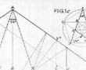

De: La Frikipedia, la enciclopedia extremadamente seria.
De: La Frikipedia, la enciclopedia extremadamente seria. De: La Frikipedia, la enciclopedia extremadamente seria.
Los artículos dentro de esta categoría pueden o no tener gracia pero están claramente muy mal escritos. No son artículos que se dejen leer con facilidad debido a que no tiene párrafos, no están divididos en secciones, las imágenes están mal colocadas, hacen uso de tablas cuando no es necesario o incluso dejan de lado el estilo enciclopédico de redactar artículos. Seguramente ganarían enteros si estuvieran escritos de manera decente.
Estos artículos normalmente son escritos por usuarios estúpidos ya que no cuesta nada leerse las ayudas y que por consiguiente no tienen ni puta idea de como usar el MediaWiki y se empeñan en usar html por huevos.
Actualmente la plantilla que identifica estos artículos luce tal que así:
Código:{{maquetar}}
|  | ATENCIÓN El autor de este artículo no aprendió geometría en el colegio, ha leído muy pocos libros en su vida y/o no se ha leído las ayudas. Así que es incapaz de producir un texto medianamente maquetado. Por lo tanto es necesario remendar el artículo. |
Autor(es):